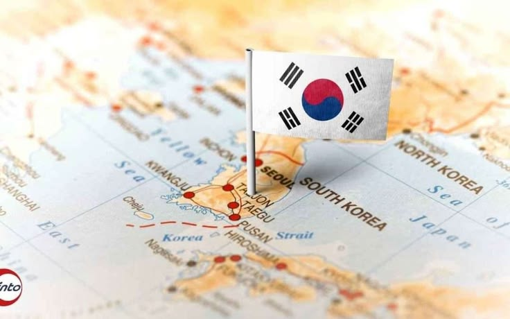
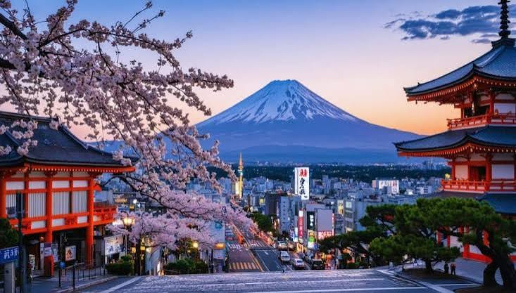

Sejarah
Nama Korea berasal dari nama kerajaan Goryeo yang didirikan
oleh Wang Geon pada tahun 918. Nama Goryeo kemudian dikenal
oleh bangsa-bangsa asing dan berubah menjadi “Korea”.
Sejarah yang diceritakan secara turun-temurun mengatakan
bahwa Kerajaan Goryeo berhasil menyatukan sebagian besar
wilayah Semenanjung Korea. Nama Goryeo sendiri berasal dari
Goguryeo, salah satu dari Tiga Kerajaan Korea, yang kemudian
menjadi dasar munculnya nama Korea yang dikenal hingga sekarang.
Berdasarkan sejarah dan filosofi Korea, nama Korea memiliki
hubungan erat dengan nama Goryeo, yaitu sebuah kerajaan yang
pernah berdiri di Semenanjung Korea. Goryeo merupakan bentuk
nama yang berasal dari Goguryeo, salah satu dari Tiga Kerajaan
Korea yang memiliki wilayah kekuasaan dan pengaruh yang besar.
Kerajaan Goryeo kemudian berkembang menjadi salah satu kerajaan
penting dalam sejarah Korea dan dikenal oleh bangsa-bangsa asing
melalui hubungan perdagangan dan budaya. Dari nama Goryeo
tersebut, bangsa asing kemudian menyebut wilayah tersebut dengan
nama “Korea”. Nama Korea akhirnya menjadi sebutan yang dikenal
secara luas untuk wilayah, masyarakat, dan budaya yang berasal
dari Semenanjung Korea hingga sekarang.
Geografis

Korea terletak di Semenanjung Korea, di kawasan Asia Timur.
Wilayah Korea dikelilingi oleh Laut Kuning di sebelah barat,
Laut Jepang di sebelah timur, dan Selat Korea di sebelah selatan.
Korea memiliki banyak pegunungan dan perbukitan, dengan wilayah
yang memiliki empat musim, yaitu musim semi, musim panas,
musim gugur, dan musim dingin.

Korea memiliki bentang alam yang beragam, mulai dari pegunungan,
sungai, hingga daerah pesisir. Salah satu gunung yang terkenal
adalah Gunung Hallasan yang berada di Pulau Jeju. Kondisi geografis
tersebut membuat Korea memiliki pemandangan alam yang indah dan
menjadi salah satu daya tarik bagi wisatawan.
Wisata
Korea dikenal sebagai negara yang memiliki banyak tempat wisata
menarik, mulai dari wisata alam, sejarah, hingga tempat-tempat
modern. Beberapa destinasi yang terkenal adalah Seoul, Pulau Jeju,
Namsan Seoul Tower, Istana Gyeongbokgung, dan Desa Bukchon Hanok.
Pulau Jeju

Pulau Jeju adalah salah satu tempat wisata terkenal di Korea
Selatan. Pulau ini terkenal dengan keindahan alamnya, seperti
pantai, air terjun, gua lava, dan pegunungan. Di tengah Pulau
Jeju terdapat Gunung Hallasan, gunung tertinggi di Korea Selatan.
Jeju juga terkenal dengan pemandangan laut yang indah, suasana
yang tenang, serta budaya lokal yang unik sehingga banyak
dikunjungi wisatawan.
Seoul Tower

Seoul Tower adalah salah satu tempat wisata terkenal di Seoul,
Korea Selatan. Menara ini berada di Gunung Namsan dan terkenal
dengan pemandangan kota Seoul dari ketinggian. Pengunjung dapat
menikmati pemandangan kota, terutama pada malam hari ketika
lampu-lampu Seoul terlihat indah. N Seoul Tower juga menjadi
salah satu ikon wisata Korea Selatan yang banyak dikunjungi
wisatawan.